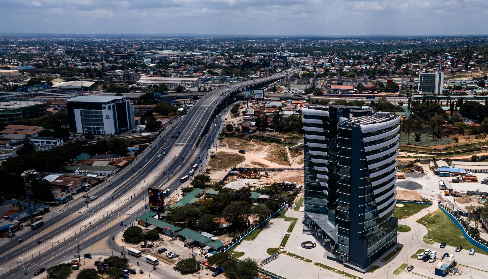
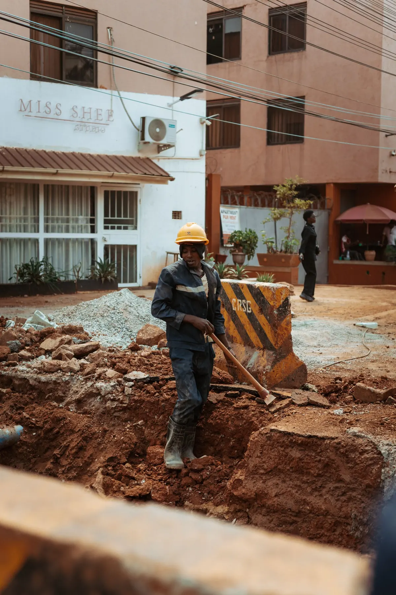
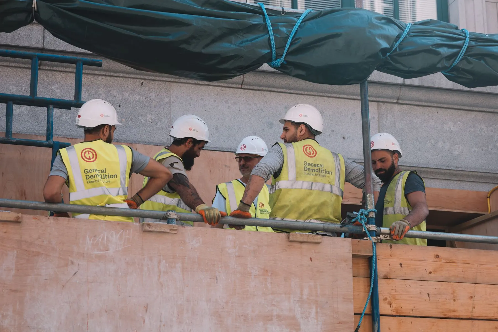
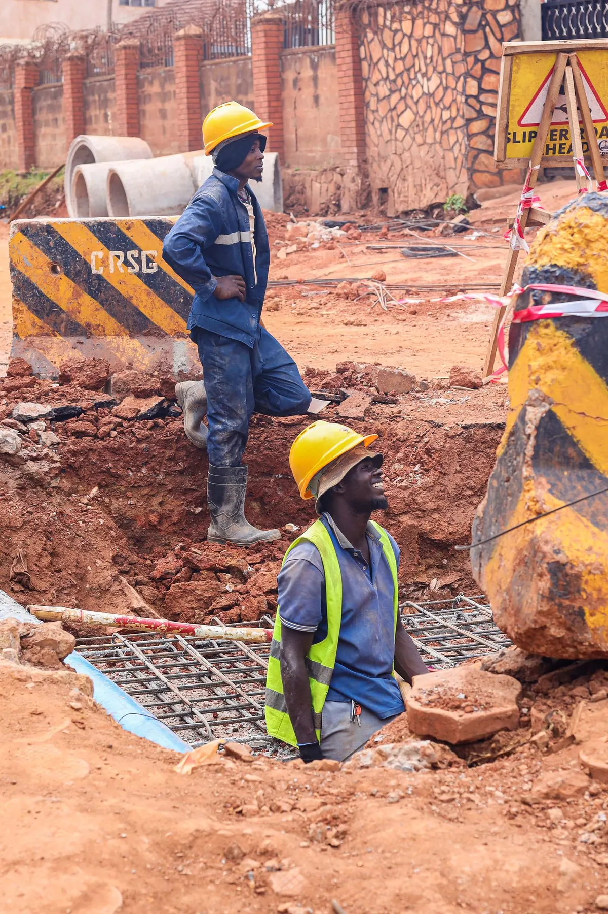
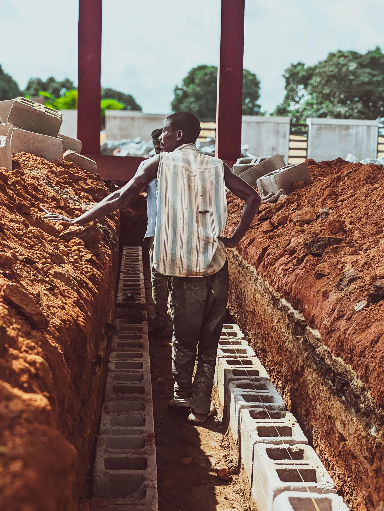
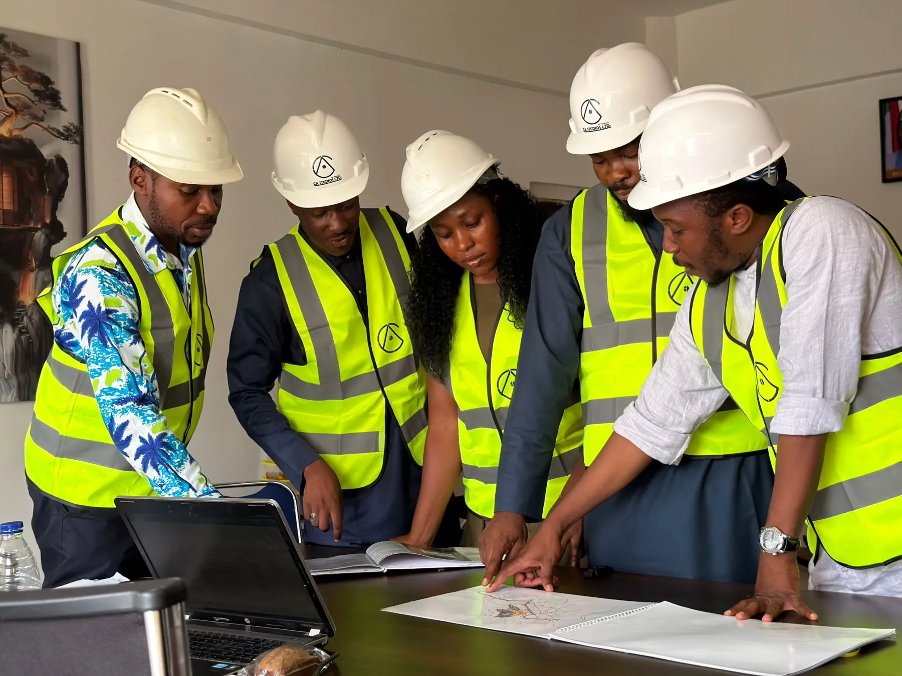
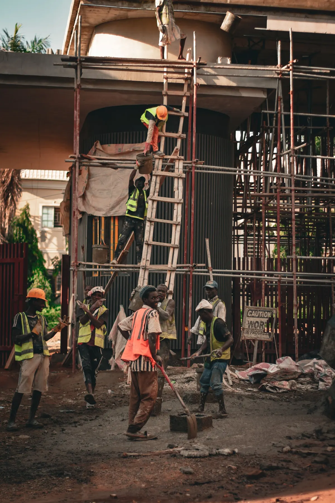

Mechanical work, made tangible.
From building services and plumbing to HVAC, fire protection and industrial mechanical systems, GIMDO can discuss scopes that fit its CRB Class 4 mechanical registration. Each enquiry starts with a review of site conditions, technical requirements, safety needs and programme. Proposed work is confirmed against the registered scope before it is agreed. The images below are illustrative references, not completed GIMDO projects.

Mechanical installation can include positioning plant, connecting equipment and integrating services with the building systems. Before work begins, the team confirms access, approved drawings, interfaces with other trades and the safe sequence for installation. Agreed inspection and commissioning checks follow, with handover records for the completed package. Each proposed scope is checked against GIMDO’s CRB category and contract documents. This photograph is an illustrative site reference, not a completed GIMDO project.

Mechanical services must fit the building layout and construction programme. Coordination with the client, consultants and other trades helps resolve routes, openings, plant locations and installation sequence before work proceeds.

Potential plumbing packages include internal water distribution, sanitary connections and associated drainage. The required drawings, materials, testing steps and connections to existing services are confirmed for each project.

Clear sequencing helps mechanical work fit the wider construction programme. Site access, interfaces with other trades, material handling, inspection points and handover requirements are reviewed with the project team before work begins.

Where included in an approved mechanical scope, fire protection services require careful coordination of routes, equipment locations, access for inspection and interfaces with the building design. Scope and compliance requirements are checked before engagement.

Mechanical maintenance may involve planned inspections, fault reporting, repairs and functional checks. A clear work plan sets responsibilities, access arrangements, safety controls, programme and records for the agreed task.
Tell us what you need built.
Share your scope, location and timeline. We can discuss whether the work fits GIMDO's registered mechanical contractor category.